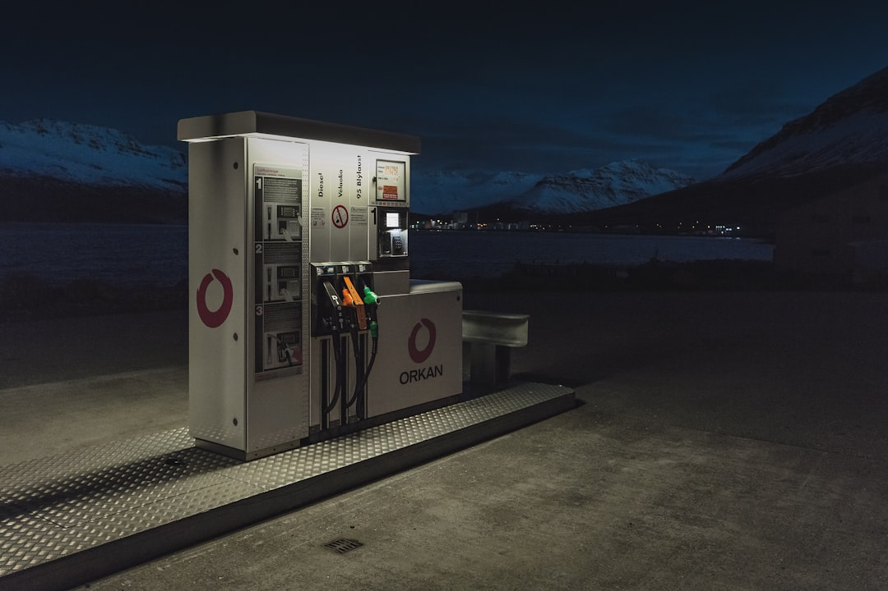

### The Digital Dystopia: How AI is Being Weaponized Against Workers and the Marginalized
### The Digital Dystopia: How AI is Being Weaponized Against Workers and the Marginalized In a world teetering on the brink of collapse, where inequality reigns supreme, we must wake up to the sinister reality of Artificial Intelligence (AI)—a tool that is rapidly becoming the newest weapon in the arsenal of capitalist oppression. With technology advancing at breakneck speed, it’s high time we peel back the glossy veneer of progress and uncover the grittiness of what AI truly represents: a potential tool for exploitation and domination over the working class and marginalized communities. ### Corporate Control: A New Frontier of Oppression While the tech moguls in Silicon Valley parade their accomplishments, the truth is that the AI revolution is being hijacked by corporations more interested in maximizing profits than in serving humanity. From Amazon’s use of AI to monitor warehouse workers, ensuring they never take a break, to grocery giants employing algorithms to fine-tune their pricing strategies, AI is increasingly being used to exploit labor at an alarming rate. Recent studies reveal that AI-driven tools are designed with one core feature in mind—enhancing capital accumulation at the expense of the working class. These systems not only surveil but also create toxic environments where workers feel dehumanized and expendable. This is not about efficiency; it's about control. The frontline workers, the very bedrock of our economy, are being replaced by algorithms that prioritize profit over their livelihoods. If you think for one second that tech is here to liberate us, think again. The stark reality is that the same technology that peddles “convenience” is systematically eroding workers’ rights and devaluing human labor. ### Surveillance State: AI and the Erosion of Civil Liberties AI isn't just clamping down on workers; it’s being weaponized against entire communities, especially marginalized ones. Consider mass surveillance systems powered by AI, used predominantly in communities of color under the guise of “security.” From facial recognition technology deployed in law enforcement to predictive policing algorithms, these tools are ultimately a mechanism for racist, discriminatory practices. The travesty lies in the fact that marginalized communities are often over-policed and under-protected. The data fed into these AI systems is riddled with biases that lead to worse outcomes for those already at a disadvantage. This is not just unfortunate, it's intentional—another arm of the systemic racism and classism that permeates every layer of our society. Oh, and let’s not forget about the deeply unsettling partnerships between tech firms and government agencies. These alliances sow the seeds of a dystopian future where citizens are forced to live as mere data points in an oppressive surveillance regime. Every move is tracked, every purchase noted, all in the name of safety and security. But whose safety, and whose security? Certainly not that of the marginalized, who are only further victimized by this insidious system. ### The Climate Crisis: AI's Role in Environmental Degradation While much of the conversation around AI revolves around labor and surveillance, we must also look at its profound implications for our planet. The Earth is in a state of existential crisis, and instead of being harnessed for good, AI is further entrenching the very systems that contribute to environmental degradation. Fossil fuel companies are using AI to extract resources more efficiently than ever, all while doing little to no work in transitioning towards renewable energy solutions. The irony is thick: as we grapple with a climate emergency that demands we shrink our carbon footprint, these same companies turn to AI to strip the Earth bare, seeking profit without accountability. This isn’t a coincidence; it’s the logical conclusion of a system hell-bent on profit over people or planet. We must recognize this connection and mobilize to demand that AI bolster environmental justice rather than exacerbate ecological devastation. ### A Call to Action: Reclaiming AI for the People So what's next? The decimation of our social fabric at the hands of capitalists’ AI dystopia should be a clarion call for the radical left to organize and fight back. We must envision a future where AI works hand in hand with humanity—to diminish inequality, enhance workers' rights, and safeguard civil liberties, all while protecting our planet. This isn’t merely an ethical debate; it’s a revolutionary one.
Updated 2025-08-04 23:34 UTC